Getting Started Guide
Getting Started Guide for Video Capture on Nintendo 3DS
Welcome to the getting started guide for installing and using video capture software for your Nintendo 3DS console. Please follow the steps below to set up your system and start capturing videos.
Step 1: Software Download
Visit the download section on our website:
- Go to our website and navigate to the “Downloads” tab.
- Direct link to download page.
Download the software corresponding to your console model and operating system:
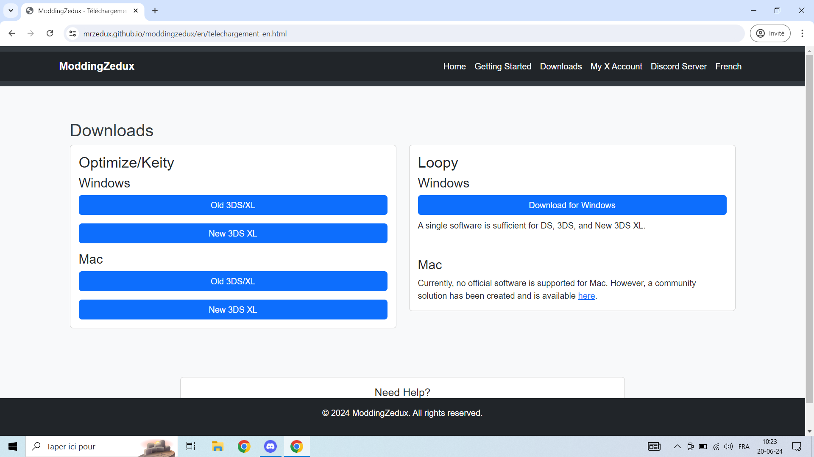- Select your console model (Old 3DS, New 3DS, etc.).
- Choose your operating system (Windows, Mac, etc.).
- Click on the download link to download the file.
Step 2: Installing Drivers
Locate the drivers folder:
- Once the file is downloaded, extract it if necessary.
- Open the folder and look for the sub-folder named “drivers”. 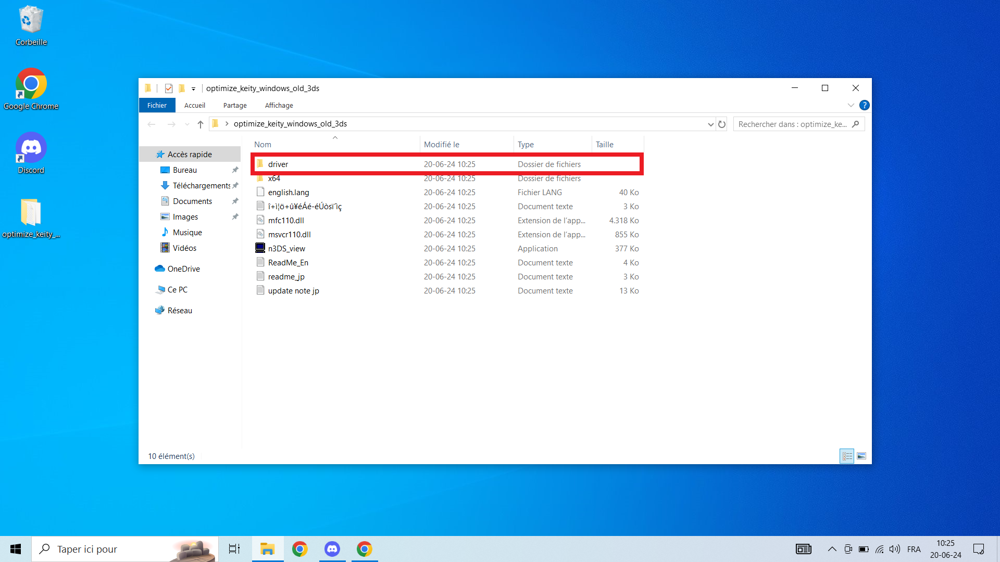
Install the drivers:
- Double-click on the driver installation file.
- Follow the on-screen instructions to complete the driver installation. 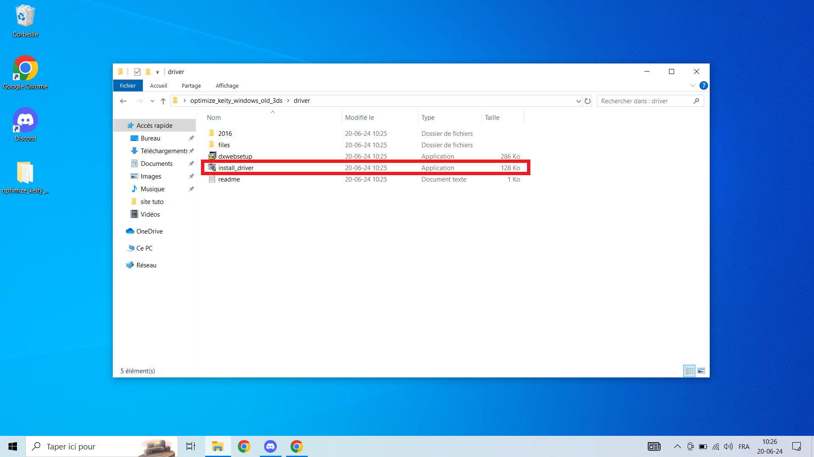
Step 3: Connecting the Console
Connect the console to the computer:
- Use an appropriate USB cable to connect your Nintendo 3DS console to your computer.
- Ensure that the console is powered on and properly connected.
Step 4: Launching the Software
Launch the capture software:
- Go back to the folder where you downloaded and extracted the files.
- Double-click on the executable file of the capture software (e.g., n3ds_view.exe or new3ds_view.exe). 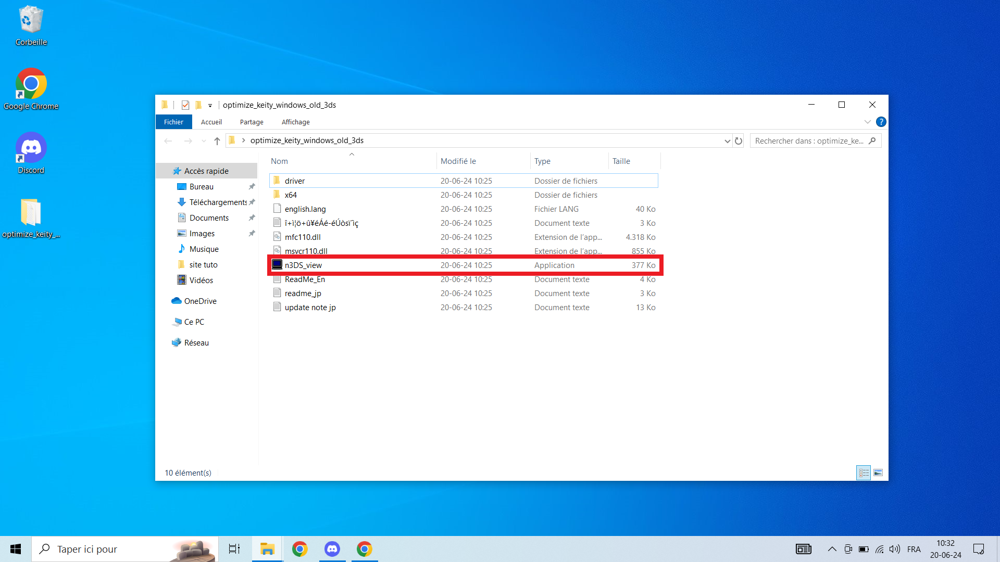
Step 5: Activating for Old 3DS
Enter the product key for Old 3DS models:
- If you are using an Old 3DS console, a window asking for a product key will appear.
- Enter the product key provided with your purchase. If you do not have it, contact us to obtain it.
Step 6: Calibration
Apply calibration settings:
- Once the software is launched, a calibration window will appear.
- Follow the instructions to adjust the calibration settings according to your setup.
- You can refer to our calibration guide for optimal settings. 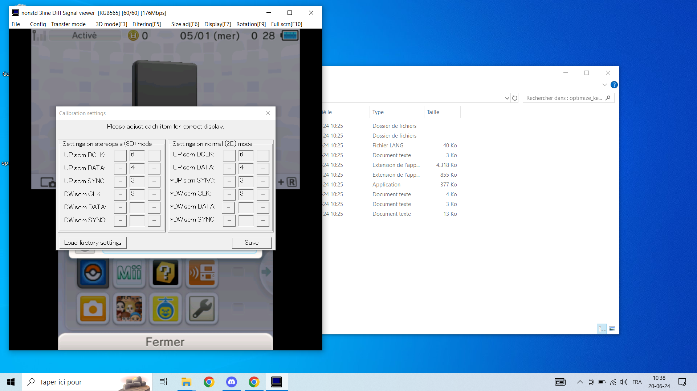
Step 7: Testing Video Capture
Test video capture:
- After calibration, you should see your console screen appear on the computer.
- Test video capture to ensure everything is functioning correctly.
- Normally, video capture should work:
- At this stage, your system should be ready to capture videos from your console.
Step 8: Sound Activation
Enable sound for video capture:
- Open the capture software.
- Go to Config then Sound Settings. 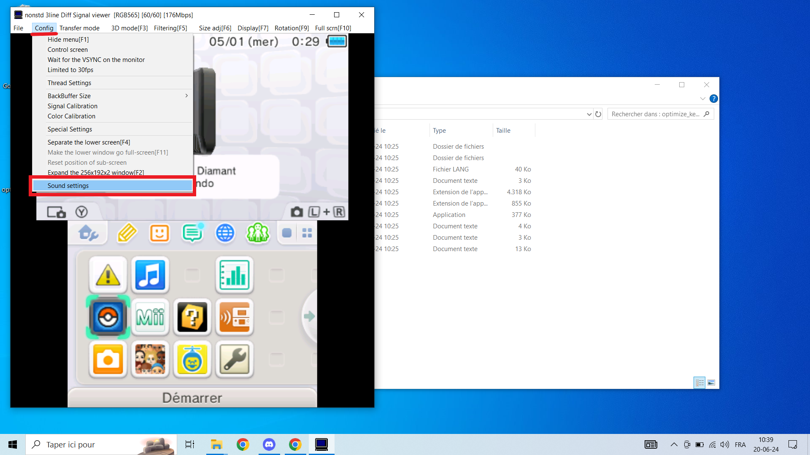
- Check the box next to Use the digital Sound Output beta.
- Adjust the volume using the slider below. 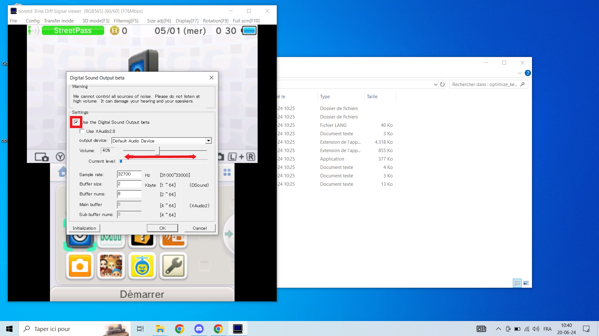
- Ensure sound is properly configured for optimal video capture experience.
In Case of Issues
Contact us for assistance:
- If you encounter any problems or have additional questions, feel free to contact us via our X account or join our Discord server.
- Contact us on X - @3DSCaptureZ
- Join our Discord server
We are here to help ensure you can capture your videos without any issues. Happy capturing!
Step 1: Download the Software
Step 1: Software Download
Access the download section on our website:
- Visit our website and navigate to the "Download" tab.
- Direct link to the download page.
Download the software corresponding to your console model and operating system:
- Select your console model (Old 3DS, New 3DS, etc.).
- Choose your operating system (Windows, Mac, etc.).
- Click on the download link to download the file.
Step 2: Extract the Files
- Double-click the downloaded file to extract the files. 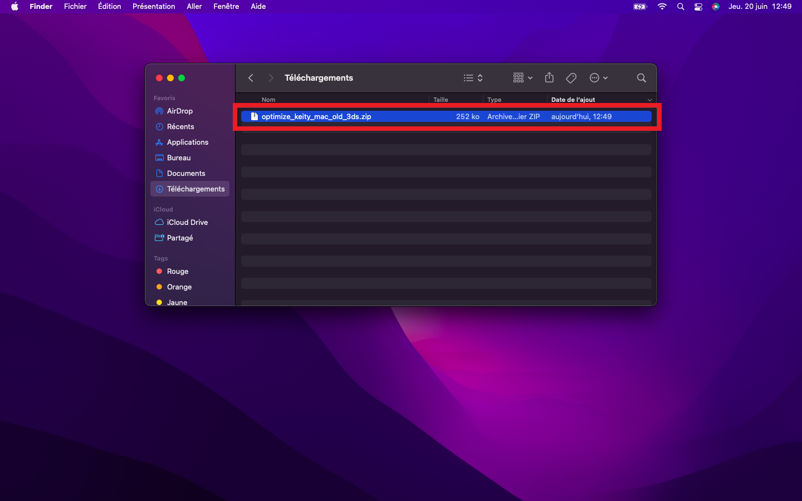
Step 3: Connect the Console to the Computer
- Use an appropriate USB cable to connect your Nintendo 3DS console to your computer.
Step 4: Launch the Software
- Launch the software by double-clicking on the extracted executable file. 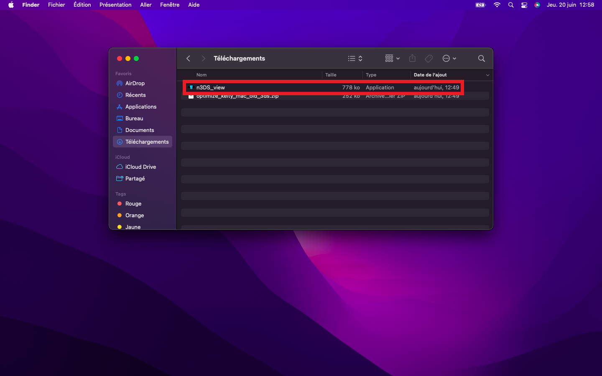
Step 5: Enter Product Key (For Old 3DS)
- If you are using an Old 3DS console, a window asking for a product key will appear.
- Enter the product key provided with your purchase. If you do not have it, contact us to obtain it.
Step 6: Activate Sound
- Activate sound by going to "Configuration" and then "Sound". 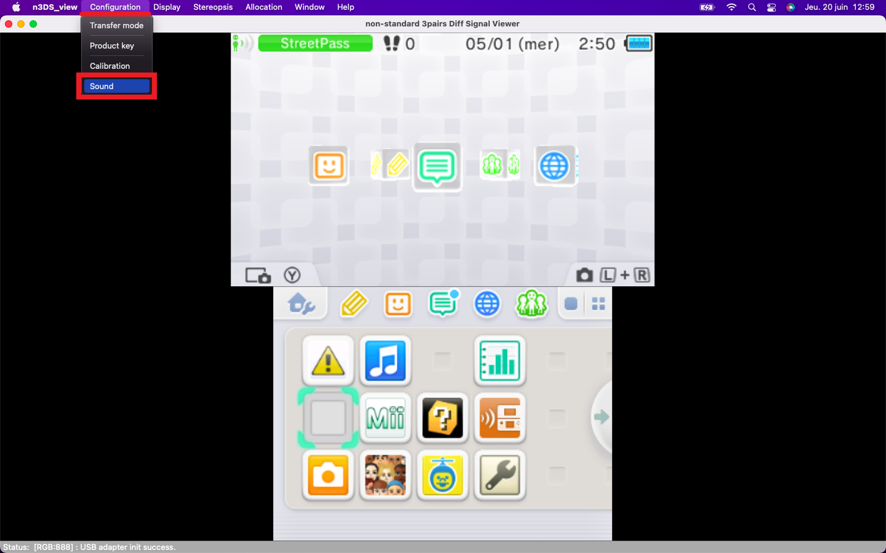
- A window will open.
- Check the box next to "Use the digital Sound Output beta".
- Use the slider that appears to adjust the audio power according to your preferences. Move the slider to the right to increase the volume and to the left to decrease it. 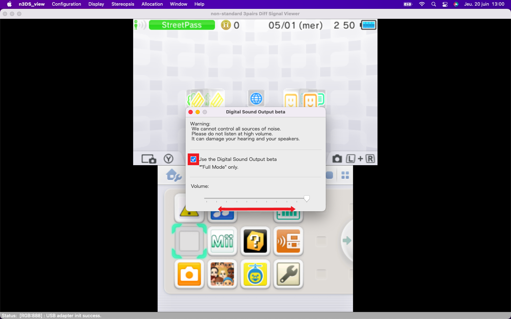
Step 7: Verify Video Capture Functionality
- Video capture should normally work properly after following these steps.
In Case of Issues
Contact us for assistance:
- If you encounter any problems or have additional questions, feel free to contact us via our X account or join our Discord server.
- Contact us on X - @3DSCaptureZ
- Join our Discord server
We are here to help ensure you can capture your videos without any issues. Happy capturing!
Currently unavailable.